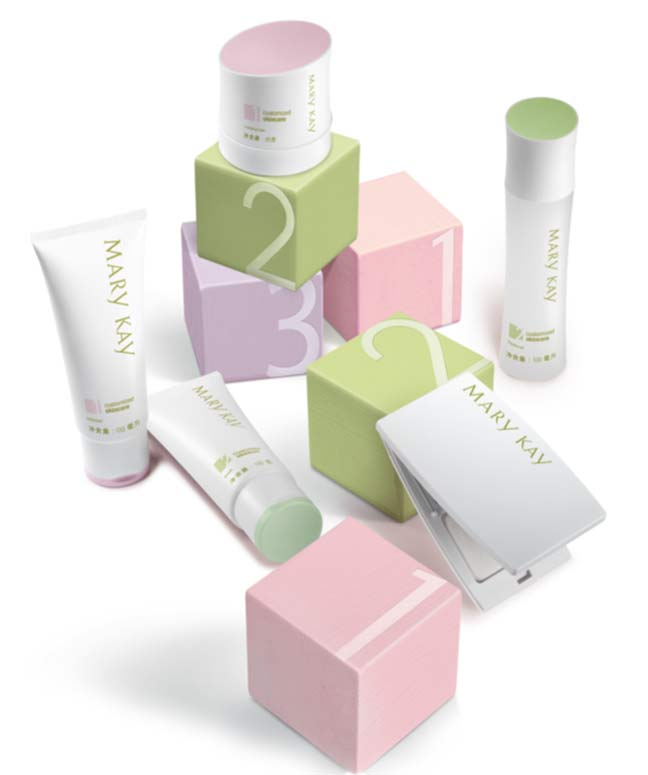
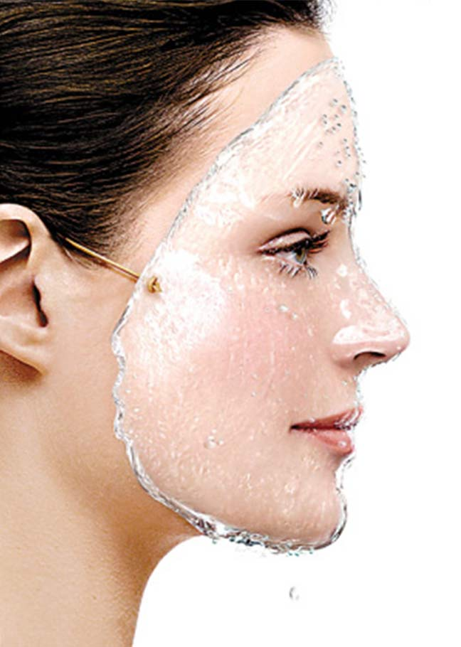

Q:油性肌肤只要控油就可以了吗？
A：受荷尔蒙激素影响，或者在温度高、熬夜以及压力增大等环境中，皮脂腺运作过度亢奋，分泌过量油脂，出现满面油光，过量的油脂还会扩大甚至堵塞毛孔，造成毛孔粗大、黑头、粉刺、痘痘等困扰。所以除了彻底清除毛孔内多余的油脂污垢，同时需要补水保湿。如果单单控油而不知道补水，皮肤会接收到“干旱”的错误信号，反而会分泌更多油脂来弥补。
Q：混合性肌肤好烦人哦，怎么保养才能调节肌肤水油失衡的现象？
A：混合性肌肤是成年人最常见的肤质。通常T区会油腻而两颊则干燥甚至紧绷。随着季节、环境因素等影响还分为混合性偏干、偏油两种现象。如果是混合性偏干肌肤，T区油、毛孔大，两颊却有紧绷感，并且眼周有干纹。这样的肌肤要考虑随季节变化、环境改变分季而治。夏季肌肤容易出油 ，需要清爽控油并补水；春、秋、冬就要加强滋润保湿，同时做好T区清洁工作啦。
播放视频《混合性肤质洁面手法》
*建议在WIFI环境下观看
Q：玫琳凯经典护肤系列有什么特别成分可以保持肌肤水油平衡呢？
A：玫琳凯经典护肤系列有三个配方哦～可以针对所有肤质。三个配方共有的成分：特别的植物精华组合Botanic Power®由水飞蓟果提取物、罗汉果提取物、柳珊瑚提取物组成，帮助肌肤保湿平衡，补充能量，回复自然健康状态。除此之外，有针对性的植物提取物分别蕴含于三种配方，满足不同肤质的健康需求。

播放视频《经典护肤系列介绍》
*建议在WIFI环境下观看
Q：缺水“沙漠”肌，该如何护理呢？
A：“沙漠肌肤”本身含水性能就比较差，面临外部环境比如风的侵袭，干燥感会越来越严重，一旦演化为极干燥肌肤，蜕皮、刺痛、皲裂等肌肤问题就会接踵而来，因此需要更细心更有针对性的加强护理，在玫琳凯经典护理五步中搭配上舒颜精华,预防肌肤过度缺水所产生的亚健康状况,再使用保湿“姐妹花”迅速提升肌肤保湿度：清爽保湿凝露帮助深层补水，滋润保湿乳霜提供更周全更深入的滋润,将补进去的水分和营养紧紧锁住，保持10小时以上的水润柔嫩。
